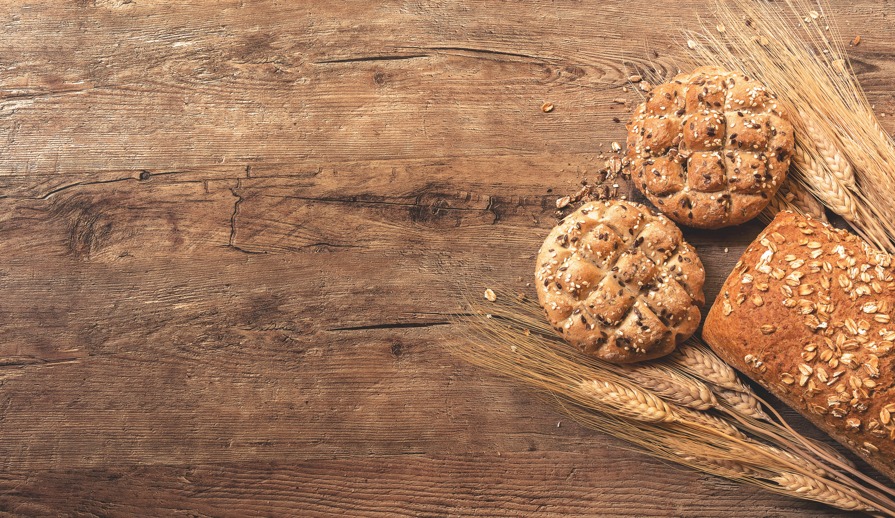

Cinnamon Swirl
Made with real Ceylon cinnamon and high-quality ingredients for a perfect texture and sweet aroma.
Order Now
Experience the warmth of traditional baking, delivered fresh to your door.
Handcrafted daily using time-honored techniques and the finest ingredients.
Made with real Ceylon cinnamon and high-quality ingredients for a perfect texture and sweet aroma.
Order Now
Our classic homemade white bread with a crispy crust and soft crumb that pairs perfectly with any meal.
Order Now
A South American staple. Naturally gluten-free, with a rich, cheesy flavor and perfectly chewy texture.
Order NowWe make it easy to get fresh bread straight to your table.
Text your order to (801) 687-5879. Don't forget to include your delivery address!
Browse our selection and order securely through our online shop. Pickups and deliveries available.
Go to Shop"Good bread is the most fundamentally satisfying of all foods; and good bread with fresh butter, the greatest of feasts."— James Beard